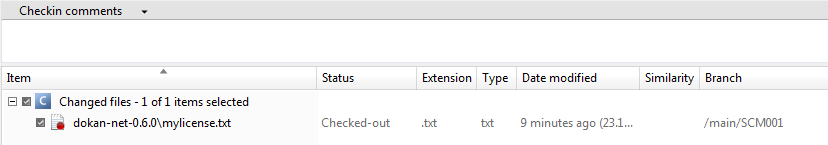

Let’s go to the branch explorer and check the current state:
Figure 1: Current state
Click on the “Options” button on Tool bar. On the right side you will see the properties of the branch. The windows will look like this:
Figure 2: Properties of the branch
Let’s now make some changes on the branch. Let’s go to “Items View”, we are going to modify ‘dokan-net-0.6.0\readme-dokan.txt’ file to add some lines at the end. Let’s first run a checkout:
Figure 3: Items View
Right click on the file and select Open to edit the file. We are going to add several lines at the end:
Figure 4: Adding files
Let’s go to pending changes and check what we have modified so far:
Figure 5: Pending Changes
Now, you can introduce a comment for the checking, something like the following will show up:
Figure 6: Checkin Comments
Let’s go to “Branch Explorer” check the branch so far:
Figure 7: Current Branch
As you can see, there is a new changeset in the branch SCM001. Why don’t check the difference? So, right click on the current changeset, and you will see the figure below:
Figure 8: Current Branch
Once you run Diff changeset, you can inspect the difference, and you will see something like the following will show up:
Figure 9: Diff Changeset
We are going to do a new change in the branch. Let’s go to “Items View”. Modify ‘‘dokan-net-0.6.0\mylicense.txt’ as follows: delete the lines 10 and 11.
Figure 10: Modifying the file
Let’s go to “Branch Explorer” view, something like the following will show up:
Figure 11: Branch Explorer
What is there on the graphic? You can see a “house” on discontinuous line. This is the icon for “Checkout changeset”.
It means:
Go to pending changes what we have modified so far:

Figure 12: Pending Changes
Now you can checkin and write a comment like: “Modifying mylicence.txt file”:
Figure 13: Checkin comments
Let’s go to “Branch Explorer” view to see the current state of the current branch, SCM001. Something like the following will show up:
Figure 14: Branch Explorer
What have I done? I made two checkins and I’m using the SCM001 branch to hold all this changes. So if you check-in very often it will be easy to understand all changes. Indeed you are self-documenting the code.
In the traditional model you must to write documentation. Good documentation is hard to find. That’s why it’s so pleasantly to see such documentation is generated on my own and in easy way.
You can read more about it in this post
It’s great. The lesson 5 is finished.